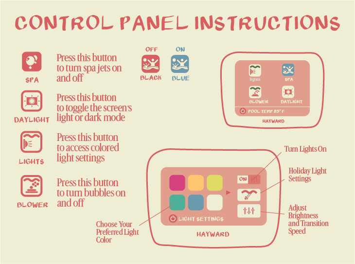

Welcome to The Florentine
Villa C · 12 Bedrooms · Sleeps 30 · ADA Accessible

QUIET HOURS: 10 PM - 8 AM
Please be respectful of neighbors and other guests.
Pool & Hot Tub
No lifeguard on duty.
Swim at your own risk.
Maintenance Schedule
Pool: Every Monday & Thursday (7:30a-12p)
Landscaping: Every other Thursday (7:30a-12p)
Hot Tub Controls
Pool Rules
- No glass - broken glass requires draining the pool
- No yelling, large speakers, or loud noises
- Children must be supervised by an adult
- No pets in the pool or hot tub
- No diving, running, or horseplay
- No smoking
Failure to follow pool rules can result in a minimum $1000 fine and/or cancellation of your reservation.
Check-In / Check-Out
Check-In: 4:00 PM
Check-Out: 11:00 AM
Driveway Vehicle Gate: Use gate remote to operate. Pedestrian gate must be closed for the vehicle gate to operate.
WiFi
Network: C
Password: 88888888
TV & Streaming
Access live TV and premium cable through the "Real Choice TV" app on your Roku.
House Info & Rules
Address: 1319 Japonica Street, Villa C, New Orleans, LA 70117
- Quiet hours 10 PM - 8 AM
- No smoking indoors
- No parties or events without approval
- Please use wall-safe tape for decorations
- No pets
Trash: Dumpster is located across from Villa B in the parking lot
First Aid Kit: Located in the cabinet left of the kitchen sink
Fix-It Box: AA & AAA batteries, privacy lock key, screwdrivers, allen wrenches, extra TV remote, and key for outside hose - all located in the cabinet left of the kitchen sink
Add-On Services
Enhance your stay with these optional services.
Email Us to Book- Cold Plunge - $200/day (24 hours, includes setup)
- Private Chef - In-home dining experience
- Massage Therapy - Licensed therapists come to you
- Grocery Delivery - Fridge stocked before arrival
- Airport Transportation - Private car service
- Decorators - Jet Set Bach
- Event Planning - Weddings, reunions, corporate
Events
Recommendations
- Pizza Delicious - Great pizza and closest choice for pizza delivery. Vegan options too!
- Bratz Ya'll - Really good beer garden right next to Pizza Delicious with a German menu.
- Galaxie Tacos - Great neighborhood taco spot with great outdoor seating.
- Frady's Po'boy Shop - Make sure to bring cash to this iconic walk-up po'boy shop in the Piety neighborhood.
- Bacchanal - Get there early to ensure a good spot outdoors. Great wine selection, menu and custom charcuterie board options. Live music every day; check out the Noah Young Band on Sundays!
- Moshiko - Amazing Palestinian/Lebanese fare, perfect for a group takeout order.
- City Market - Newest food market on the corner of St. Claude Ave and Elysian Fields. Variety of different food options available.
- St. Roch Market - Food market with something for everybody.
- Lowpoint - Now on the corner of St. Claude and Independence. Great atmosphere for a quick morning brew and food. Open from 8am to 8pm.
- Small Mart / Pond Coffee - Laid back cafe with many vegan/vegetarian options. Try the coffee from Pretty Coffee Roasting- it's the best in the city! Open til 5:30pm.
- Petite Clouet - Small neighborhood cafe with great grab and go options.
- Bywater Bakery - Laid-back bakery & cafe specializing in king cakes, plus sandwiches, soups, salads & coffee.
- St. Coffee - The local's favorite coffee shop filled with eclectic art.
- Honey's - Small but mighty breakfast and lunch. A favorite for remote workers.
- Paladar 511 - Delicious upscale Italian restaurant with an incredible brunch if you can catch it.
- The Joint - Amazing walk up barbecue joint with great food and outdoor patio.
- Capulet - Spacious restaurant and event space with great food and often live music.
- Suis Generis - Experimental, New American, "tiki farm to table" restaurant. Definitely a hidden gem only open on the weekends.
- Sneaky Pickle / Bar Brine - Sneaky Pickle at lunch, Bar Brine at night. Amazing cuisine and great cocktail menu.
- Budsi Thai - Best Thai in the city (in our humble opinion). Big plates. Perfect if you want leftovers.
- N7 - Tucked-away fancy french fare with a gorgeous garden-like atmosphere.
- Arabella - Pick up or sit down pasta spot. A local favorite.
- Saint Germain - World renowned tasting menu with a beautiful garden wine bar.
- Acamaya - Mexican fine dining. One of the hottest new restaurants in the city right now! Reservations are a must.
- Elysian Bar - Incredible food and voted the #1 Best Hotel Bar in America!
- El Caimon Gordo at Siberia - Best Colombian food in the city. Open M-Th, 5:30p-11p. Owner/Chef Mark is also available on the weekends as a private chef that can come right to the house!
- Robert's Fresh Market - Local grocery chain about 1.5 miles down St. Claude Avenue. Reliable place to do a full shopping trip.
- New Orleans Food Co-op - Community-focused market located in the back of The New Orleans Healing Center. Nice option for organic produce, supplements and holistic groceries.
- Dollar General on Poland Ave - Just down the street. Easy stop for quick basics and household essentials.
- Faubourg Wines - Don't miss their Wine Tasting Wednesdays. Large wine collection, charming space and very friendly staff.
- Bacchanal - A whole wine selection right at the entrance when you walk in.
- Saint Germain - Just recently given a Michelin Star. World renowned restaurant with a boisterous wine collection. Fancy!
- Elysian Bar - Impeccable cocktail and wine selection. A part of the Peter and Paul.
- N7 - Very worldly wine selection as well as a great selection of Japanese spirits like sake and Japanese Whiskey.
- Parleaux Bar Lab - Spacious outdoor brewery with unique beer selections.
- Brieux Carré Brewing Co. - Small spot with a great covered area and excellent beer selection closer to the French Quarter.
- Bratz Y'all - Also great for food, plus a wonderful German beer selection.
- Bud Rips - Classic Bywater bar. A local's favorite meet up. Great drinks and service.
- Pepp's Pub - Cute and dog friendly neighborhood pub. Usually has great food vendors outside.
- Anna's - Classic Marigny stopover for drinks while on your way to the Quarter. Popular spot with locals.
- BJ's - "Bare-bones", no frills dive with live music. Cash only.
- Saturn Bar - Great for late night dancing and sports games.
- NightBloom - Moody cocktail bar with great ambiance and great DJ's on the weekends.
- Allways Lounge - St. Claude staple. Often with a live burlesque show going on. Look at tickets ahead of time.
- Music Box Village - An interactive sound art installation where buildings make music.
- Emporium - A colorful arcade bar with retro games and craft drinks.
- Kajun's Karaoke - A lively bar with nightly karaoke. Some days you may catch the "Now That's What You Call A Karaoke Band" that plays while you sing!
- Siberia - A gritty music venue with a punk, metal, and indie scene.
- No Dice - A classic all genres music venue with great programming. Formerly known as "HiHo".
- Cafe Istanbul - A performance venue for music, comedy, and theater. Located in the Healing Center.
- Sea Cave - A quirky DIY arcade bar where you can play arcade games from PS2's to 90's computer games. Food and DJ's almost every night.
- Jam NOLA - An immersive art experience celebrating New Orleans culture.
- Frenchmen Street & the French Quarter - The heart of live music, street performers, and New Orleans history.
- The Country Club - A lush, adults-only pool and bar and restaurant with a good drag brunch.
- She Comes In Peace - A vibrant art gallery, gift shop and community space with an edge.
- Waterfront Path @ Crescent City Park - A scenic riverfront trail with skyline views and green spaces.
- Euclid Records - A vinyl lover's paradise with a great collection and live in-store performances.
- Studio Be - Home to local artist Brandan 'Bmike' Odums' first solo project and gallery space. Guided or independent tours available with a great merch store.
Neighborhood Itineraries
Thursday Night
Late dinner at Apolline (upscale) or Pizza Domenica (mid-priced). After dinner, walk to Le Bon Temps Roule to catch Soul Rebel's weekly concert (tickets are $20 at the door, Thursday nights only starting around 11 pm). After the concert, walk to Ms. Mae's or Brothers Three, both classic New Orleans 24-hour dive bars.
Friday Day
Brunch at Atchafalaya. Then stroll along Magazine Street for shopping and wander around the Garden District (between Magazine St and St. Charles Ave) to check out some amazing homes. Stop at The Bulldog for a drink outside or for something fancier, head to The Chloe or The Columns.
Friday Night
Head to Superior Seafood for one of the best happy hours in the city: $1.25 oysters and drink specials (4pm-6:30pm everyday). You can either stay for dinner or continue on to New Orleans' most famous restaurant: Commander's Palace. Then head to Tchop Yard or Miel, two large outdoor bars off Tchoupitoulas St.
Saturday Day
Start with breakfast at Willa Jean (pricey) or Bearcat (less pricey but long waits and no reservations). Then walk to the WW2 museum or The Ogden Museum for engaging exhibits. Contemporary Art Center has more art if you haven't had your fix, and make sure to grab a mid-day latte at Mr. Wolf Espresso.
Saturday Night
If you're looking for a great seafood dinner Peche and Seaworthy are your best spots in the Warehouse District. Next door is The Barnett for live music and drinks in their lobby and club room. And to "top" off the night, take the elevator to Alto, their rooftop poolside bar that closes at 10:30 pm.
Friday Night (classic FQ night)
Pre-dinner drink at Arnaud's French 75. Dinner at Galatoire's (jackets required) or Antoine's. After dinner, head to Pat O's which has a great outdoor area and piano bar inside (it's in the back across from the bathrooms). Then walk to Caesars Casino for gambling.
Friday Night
Start with a pre-dinner drink at Elysian Bar. Walk to dinner at N7 for great outdoor dining (they offer a prix fixe for parties of 10+). Finish the night at Bud Rips or Anna's - both are fun dive bars.
Saturday Day
Start with brunch at Paladar 511 or Country Club, a restaurant, bar, and pool that has a Drag Brunch (must make reservations months in advance for the brunch). Then walk to Studio Be (opens at 2 pm, make a reservation before) to check out some art. Walk to Parleaux Brewery, which has a nice (large) outdoor area. Then make your way to Bacchanal, a backyard venue where you can order bottles of wine and watch live music.
Saturday Night
Dinner at Bywater American Bistro. Then walk to R Bar for a few drinks before making your way to Frenchmen Street, where you can catch live music. Most of the venues are similar so pick the venue based on the band playing. If you're still unsure, The Spotted Cat, DBA, Blue Nile, and Maison are all good options. You can walk to the French Quarter from here - if you do, stop at Lafitte's on the way.
Saturday Day
Start with breakfast at Cafe du Monde in City Park (beignets and coffee). After breakfast, walk across the bayou to check out some of the oldest live oak trees in the city. Then walk to the New Orleans Art Museum or Sculpture Garden (adults) or Storyland/Children's Museum/City Putt (kids).
For lunch, head to Parkway Tavern, which has some of the best po-boys in the city. Blue Oak BBQ has large outdoor seating and great food. If you're in the mood for a lighter lunch, Mediterranean restaurant 1000 Figs is a NOLA lunch favorite.
Saturday Night
Order pre-dinner drinks at Bayou Beer and Wine Garden, a large outdoor courtyard bar with small bites, and a large drink menu. Once you build your appetite, enjoy dinner at Addis NOLA for great Ethiopian fare. If you're in the mood for music, The Broadside and Banks Street Bar have events happening nearly every day.
In-Villa Services
Guests can book services through Airbnb Services, Let's Batch, or reach out to us if you need help coordinating.
- Chef Marc Bruckel - Fridays, Saturdays, and Sundays only. (818) 292-7157
- Chef Maria Vieages - www.chefmariav.com · chefmariav@gmail.com · (504) 613-8505
- Chef Evan Troxell - Gulf Coast Crawfish Co. (850) 543-1100
- Jet Set Bach - An all-inclusive planning service for Bachelorette & Bachelor Parties, Girls Trips, Birthday Celebrations & Group Travel For All Occasions! Our guests have loved using Jet Set Bach for anything from decorating to yoga and makeup. Visit jetsetbach.com to book their services.
- Two Chicks Walking Tours - $395 for private group tours up to 14 people! www.twochickswalkingtours.com · (504) 975-4386
- Cajun Encounters (Swamp Tours) - Transport is available to the swamp 35 minutes away. www.cajunencounters.com · (504) 834-1770
- New Orleans Ghosts (Ghost Tours) - All sorts of spooky tour packages are available. nolaghost.com · (504) 434-7314
- Will's Catering - Contact Will to arrange coming to the location to cook jambalaya and boil seafood for you. (504) 220-2641
- Gulf Coast Crawfish Co. - Book an incredible Crawfish Boil Experience with Evan! (850) 543-1100 · Book Online
- Hibachi2U - Chef will cook for approximately 1 hour and 30 minutes. Customer must provide and set up tables, chairs, plates and utensils. We don't need anything else from you, we bring the rest. (321) 360-4308 · hibachi2u.com/new-orleans
- Kathleen Barry - Yoga · Meditation · Retreats. +1 (703) 609-1941 · kathleenbaryoga@gmail.com · kathleenbarry.me
CastleDay Merch
Take a piece of CastleDay home with you.
Contact Us
For questions or issues during your stay, reach out through the platform you booked with:
Open Airbnb Open VRBOEmergency: Call 911
Call 911